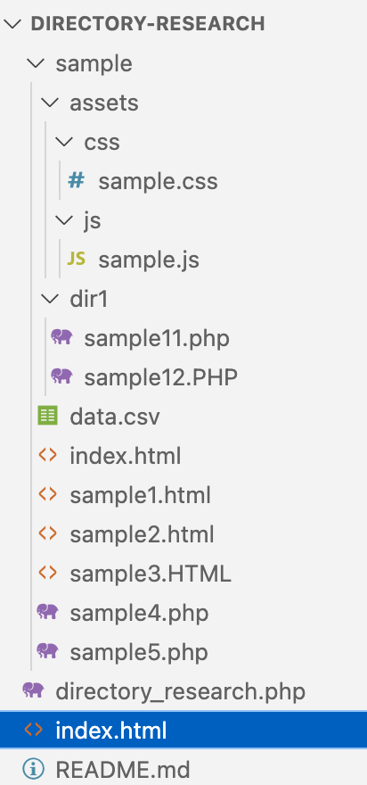

【記事】ディレクトリ構造を取得して、自動でディレクトリー・ファイル一覧をつくる
取得する拡張子(デフォルト: html, php)
高度な設定
除外するフォルダ
リンク付きで取得するか
true
false
リンクのドメインパスを置換する場合、その文字列
調査対象の開始ディレクトリを変更する場合、その文字列
取得する階層数を指定する場合、その数字
titleタグの共通テキストを除外する場合、その文字列
CSVファイルを作成するか
true
false
調査対象のディレクトリ構造
